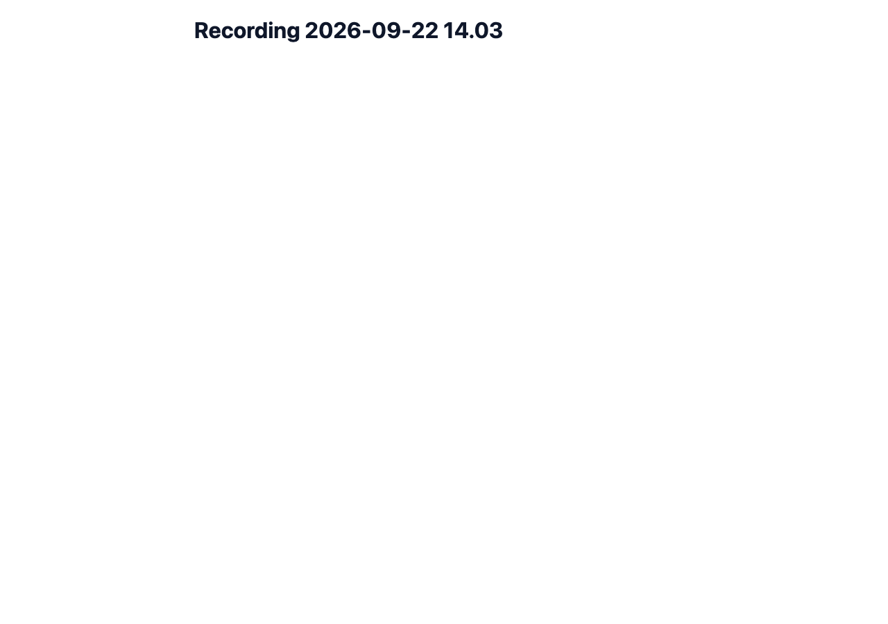
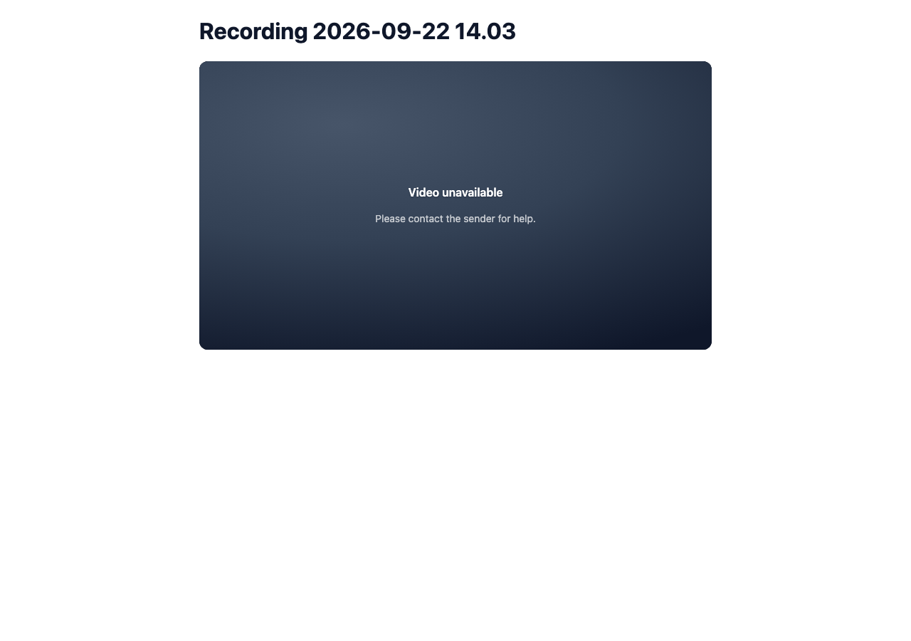
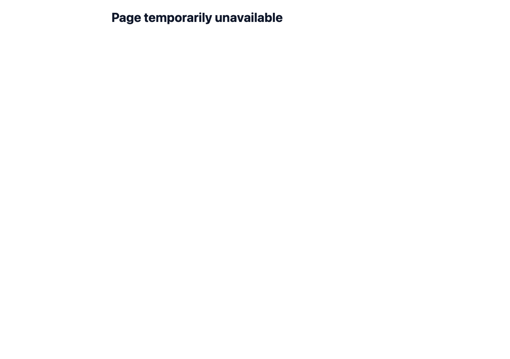
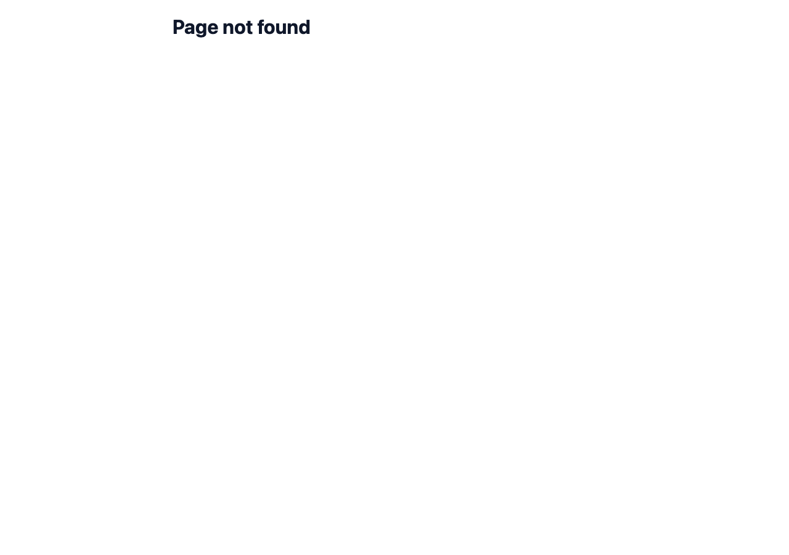
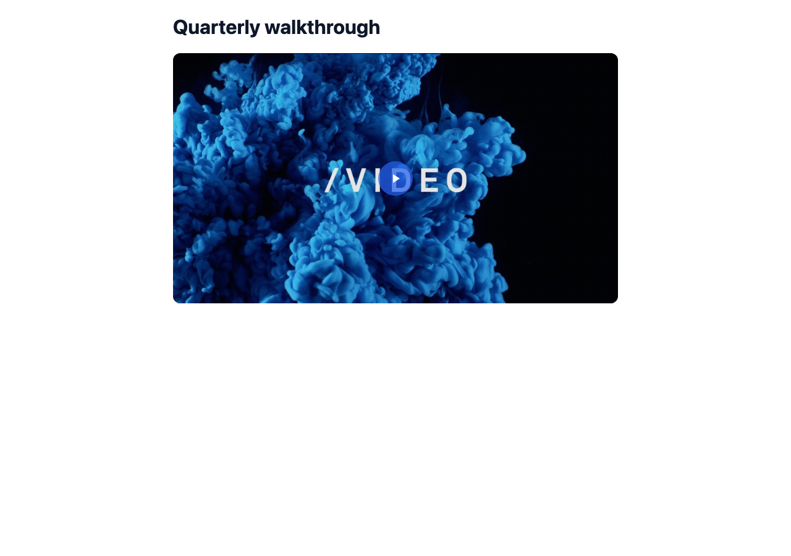
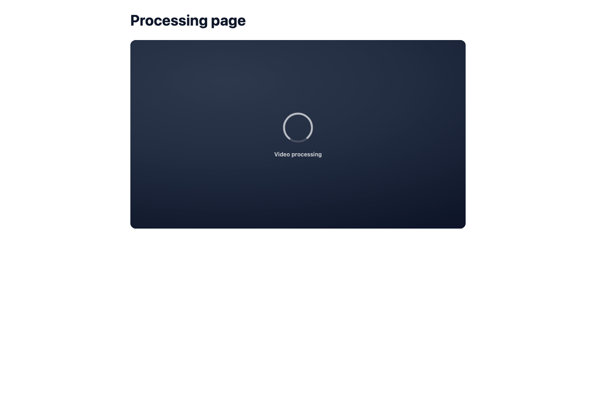

Local wrangler dev with mock data. "Before" is origin/main 705b9a4e; "after" is the PR branch. Same D1 state for both.
The one taste item: the "Video unavailable" card. The copy already existed in the renderer ("Video unavailable / Please contact the sender for help.") but had no styles. It now reuses the processing card's look.





